Métodos de Monte Carlo via Cadeias de Markov
Cadeias de Markov, algoritmos de Metropolis-Hastings e amostrador de Gibbs
Fernando P. Mayer
1 Introdução
O termo “Monte Carlo via Cadeia de Markov” abrange uma grande gama de métodos introduzidos por Metropolis et al. (1953) e Hastings (1970) para integração de Monte Carlo, e que possuem algumas ideias em comum:
- Queremos amostrar de alguma função densidade de probabilidade complicada \(f\). A suposição aqui é que nós conseguimos calcular \(f\), mas não podemos amostrar dela.
- Sabemos que certos processos estocáticos chamados de cadeias de Markov convergem para uma distribuição estacionária (se certas condições forem satisfeitas). Simular desta cadeia de Markov por um período longo, eventualmente nos levará a uma amostra da distribuição estacionária da cadeia.
- Dada a forma funcional de \(f\), queremos construir uma cadeia de Markov que possui \(f\) como sua distribuição estacionária.
- Queremos amostrar valores da cadeia de Markov de forma que a sequência de valores \(\{x_n\}\), gerada pela cadeia, irá convergir em distribuição para a densidade \(f\).
Portanto, a ideia básica dos métodos de Monte Carlo via Cadeias de Markov (MCMC) para amostrar de \(f\) é construir uma cadeia de Markov com distribuição estacionária \(f\), e rodar essa cadeia por um longo período de tempo, até que ela convirja (aproximadamente) para sua distribuição estacionária.
Os métodos de MCMC servem basicamente para gerar valores de uma distribuição. No entanto, ao contrário dos métodos anteriores (e.g. aceitação-rejeição), os valores obtidos por MCMC são correlacionados.
Uma amostra com valores correlacionados não é desejável, mas mesmo assim, os métodos de MCMC são preferidos em situações mais complexas. O primeiro motivo é que, mesmo com valores correlacionados, é possível selecionar uma (sub) amostra de valores que não seja correlacionada. O segundo motivo é que as cadeias de Markov possuem diferentes propriedades de convergência, que podem ser exploradas para se obter distribuições propostas mais fáceis de tratar numericamente, quando os métodos mais gerais de amostragem por importância (por exemplo) não se aplicam diretamente.
Além disso, o conhecimento necessário da distribuição alvo que se quer gerar é mínimo, geralmente não é necessário saber a constante de integração por exemplo. Além disso, estes métodos via cadeias de Markov facilitam a resolução de problemas de alta dimensão, através de uma sequência de problemas menores que são mais fáceis de resolver (e.g. amostrador de Gibbs).
O ponto crítico do método MCMC está na formulação de probabilidades de transição apropriadas. O algoritmo de Metropolis-Hastings é uma forma conveniente de obter uma amostra simulada, a partir do uso de uma cadeia de Markov generalizada para um espaço de estado contínuo.
2 Cadeias de Markov
Uma cadeia de Markov é um processo estocático que evolui ao longo do tempo, passando por diversos estados. A sequência de estados é denotada pela coleção de valores \(\{X_t\}\), ou seja, é uma sequência de variáveis aleatórias dependentes \[ X_0, X_1, \ldots, X_t, \ldots \] onde a transição entre os estados é aleatória, segundo a regra \[ P[X_t | X_{t-1}, X_{t-2}, \ldots, X_0] = P[X_t | X_{t-1}] \] Essa relação significa que a distribuição de probabilidade de um processo no tempo \(t\), dado todos os outros valores da cadeia, é igual à distribuição de probabilidade condicionada apenas ao valor imediatamente anterior (essa propriedade é conhecida como propriedade de Markov).
Dessa forma, para determinar a sequência de valores que a cadeia pode assumir, podemos determinar a distribuição do próximo valor conhecendo apenas o valor anterior.
A coleção de estados que uma cadeia de Markov pode visitar é chamada de espaço de estados. A distribuição de probabilidade condicional, que determina se a cadeia se move de um estado para outro é chamada de kernel de transição ou matriz de transição, e pode ser denotada por \[ X_t | X_{t-1}, X_{t-2}, \ldots, X_0 \sim K(X_{t}, X_{t-1}) \] Por exemplo, uma cadeia de Markov do tipo random walk satisfaz \[ X_t = X_{t-1} + \epsilon \] onde \(\epsilon \sim \text{N}(0,1)\), independente de \(X_t\). portanto, o kernel de transição \(K(X_{t}, X_{t-1})\) corresponde a uma densidade \(\text{N}(X_{t-1},1)\).
Considere o seguinte exemplo com 3 estados e matriz de transição \(P\):
estados <- c("PR", "RS", "SC")
P <- matrix(c(.3, .3, .4, .4, .4, .2, .5, .3, .2),
byrow = TRUE, ncol = 3)
dimnames(P) <- list(estados, estados); P# PR RS SC
# PR 0.3 0.3 0.4
# RS 0.4 0.4 0.2
# SC 0.5 0.3 0.2rowSums(P)# PR RS SC
# 1 1 1colSums(P)# PR RS SC
# 1.2 1.0 0.8## DAG
diagram::plotmat(t(P), relsize = .75)A interpretação das entradas da matriz é que, se estivermos no estado \(i\) no tempo \(t\), a probabilidade de mover para o estado \(j\) no tempo \(t+1\) será \[ P[X_{t+1} = j | X_t = i] = P_{ij} \] Por exemplo, se estamos no PR, a probabilidade de ir para SC é 0.4, ou seja, \(P[X_{t+1} = \text{SC}|X_t = \text{PR}] = P_{13} = 0.4\).
Suponha que inicialmente estamos em SC com probabilidade 1. Então a distribuição de probabilidade inicial para os três estados é \(\pi_0 = (0,0,1)\). Após uma iteração, a distribuição de probabilidade dos estados será então \[ \pi_1 = \pi_0 P = (0.5, 0.3, 0.2) \]
pi0 <- c(0, 0, 1)
(pi1 <- pi0 %*% P)# PR RS SC
# [1,] 0.5 0.3 0.2Após duas iterações, a probabilidade será
(pi2 <- pi1 %*% P)# PR RS SC
# [1,] 0.37 0.33 0.3Se continuarmos o processo acima \(n\) vezes, obtemos a distribuição de probabilidade para os estados após \(n\) iterações, que podemos escrever como \[ \pi_n = \pi_0 \underbrace{PPP \cdots P}_{n \text{ vezes}} = \pi_0 P^{(n)} \] Por exemplo, após 50 iterações, obtemos
library(expm) # potencia de matriz# Loading required package: Matrix#
# Attaching package: 'expm'# The following object is masked from 'package:Matrix':
#
# expmpi0 %*% (P %^% 50)# PR RS SC
# [1,] 0.3888889 0.3333333 0.2777778Para \(n \to \infty\) iterações, existe uma distribuição \(\pi_e\) tal que \[ ||\pi_e - \pi_n || \longrightarrow 0 \] onde \(||\cdot||\) é a distância total entre as duas densidades. Outra forma de definir esse fato é \[ \lim_{n \to \infty} \pi_n(i) = \pi_e(i) \] para todos os estados \(i\) no espaço de estados.
A distribuição \(\pi_e\) é chamada de distribuição estacionária de uma cadeia de Markov, e deve satisfazer a seguinte propriedade \[ \pi_e P = \pi_e \] Isso significa que, não importa onde a cadeia é iniciada (\(\pi_0\)), a distribuição \(\pi_n\) eventualmente chegará na distribuição estacionária \(\pi_e\).
No exemplo anterior, temos que
pi0 %*% (P %^% 5)# PR RS SC
# [1,] 0.38905 0.33333 0.27762pi0 %*% (P %^% 10)# PR RS SC
# [1,] 0.3888888 0.3333333 0.2777778pi0 %*% (P %^% 1e2)# PR RS SC
# [1,] 0.3888889 0.3333333 0.2777778pi0 %*% (P %^% 1e3)# PR RS SC
# [1,] 0.3888889 0.3333333 0.2777778pi0 %*% (P %^% 1e4)# PR RS SC
# [1,] 0.3888889 0.3333333 0.2777778ou seja, após poucas iterações (\(\sim 100\)) a distribuição estacionária já é atingida. Note portanto que
## Distribuição estacionária
(pi_e <- pi0 %*% (P %^% 1e4))# PR RS SC
# [1,] 0.3888889 0.3333333 0.2777778## Propriedade da distribuição estacionária
pi_e %*% P# PR RS SC
# [1,] 0.3888889 0.3333333 0.2777778A distribuição estacionária também pode ser aproximada a partir da frequência relativa de “visitas” em cada estado após muitas iterações. Para isso, inicia-se a cadeia em um estado qualquer, e os movimentos levarão aos outros estados a cada iteração, conforme estabelecido pela matriz de transição. O número de vezes que um estado é visitado a longo prazo (muitas iterações) levará a uma aproximação da distribuição estacionária, através das frequências relativas.
## Cria função para gerar cadeia
mc <- function(n, x1, P, states) {
x <- character(n)
x[1] <- x1
for(i in 2:n) {
x[i] <- sample(states, size = 1, prob = P[x[i - 1], ])
}
return(x)
}
## Tamanho da cadeia
N <- c(1e2, 1e3, 1e4, 1e5)
res <- lapply(N, function(x) {
mc(n = x, x1 = "SC", P = P, states = estados)
})
## Proporção relativa para cada tamanho de cadeia
t(sapply(res, function(x) prop.table(table(x))))# PR RS SC
# [1,] 0.36000 0.34000 0.30000
# [2,] 0.38100 0.33500 0.28400
# [3,] 0.38650 0.33650 0.27700
# [4,] 0.38707 0.33406 0.27887## Começando em outro estado
res <- lapply(N, function(x) {
mc(n = x, x1 = "RS", P = P, states = estados)
})
## Proporção relativa para cada tamanho de cadeia
t(sapply(res, function(x) prop.table(table(x))))# PR RS SC
# [1,] 0.37000 0.3300 0.30000
# [2,] 0.38500 0.3290 0.28600
# [3,] 0.39100 0.3374 0.27160
# [4,] 0.39028 0.3331 0.27662Existem ainda três suposições necessárias para que os teoremas limite sejam verdadeiros. A cadeia deve ser:
- Homogênea: as probabilidades de transição de um estado para outro são invariantes.
- Irredutível: cada estado pode ser atingido a partir de qualquer outro em um número finito de iterações.
- Aperiódica: não deve haver estados absorventes (i.e., estados em que, uma vez inseridos, não podem mais ser deixados).
Em geral, os algoritmos de MCMC satisfazem estas três condições.
No caso de cadeias recorrentes (ou aperiódicas), a distribuição estacionária também é a distribuição limite, no sentido de que a distribuição limite de \(\{X_t\}\) é \(\pi_e\) para qualquer valor de estado inicial \(X_0\). Esta propriedade é chamada de ergodicidade, e obviamente é de interesse direto nos métodos de MCMC, pois eventualmente atingiremos a distribuição alvo, que é a distribuição estacionária. Particularmente, para qualquer função \(h\) \[ \frac{1}{T} \sum_{t=1}^{T} h(X_t) \longrightarrow \text{E}_{\pi}[h(X)] \] ou seja, a Lei Forte dos Grandes Números, que é a base dos métodos de Monte Carlo também é aplicada nos métodos de MCMC. Essa definição também é conhecida como teorema ergódico. Isso também mostra que, embora a cadeia seja dependente por definição, a média aritmética dos valores da cadeia é um estimador consistente da média teórica.
A distribuição de probabilidade \(\pi = [\pi_0, \pi_1, \ldots]\) é chamada de distribuição limite de uma Cadeia de Markov \(\{X_n\}\) se \[ \pi_j = \lim_{n \to \infty} P(X_n = j | X_0 = i), \quad \forall \, i, j \in S \] e \[ \sum_{j \in S} \pi_j = 1 \] onde \(S\) é o conjunto de espaço de estados possíveis.
Quando a cadeia satisfaz as 3 condições acima, então a distribuição estacionária também é a distribuição limite, e sendo uma cadeia ergódica, a distribuição estacionária é única. Portanto, basta acharmos a distribuição estacionária para achar a distribuição limite.
Naturalmente podemos encontrar a distribuição estacionária da maneira como fizemos acima, ou seja, fazendo
\[ \pi_e = \lim_{n \to \infty} \pi_0 P^{(n)} \] e conferindo a relação \[ \pi_e P = \pi_e \]
No entanto, dado que a matriz de transição \(P\) é fixa e conhecida, então podemos obter a distribuição estacionária “teórica” por meio dos autovetores de \(P'\)
eigen(t(P))# eigen() decomposition
# $values
# [1] 1.0 -0.2 0.1
#
# $vectors
# [,1] [,2] [,3]
# [1,] -0.6674238 -7.071068e-01 0.2672612
# [2,] -0.5720776 -2.750209e-17 -0.8017837
# [3,] -0.4767313 7.071068e-01 0.5345225ev <- eigen(t(P))$vectors
## Distribuição estacionária
ev[, 1]/sum(ev[, 1])# [1] 0.3888889 0.3333333 0.2777778Para detalhes dessa relação veja este link.
Veja uma animação em http://setosa.io/ev/markov-chains.
3 Algoritmos de Metropolis-Hastings
Os algoritmos de Metropolis-Hastings (M-H) são uma classe de Métodos de Monte Carlo via Cadeias de Markov, incluindo casos especiais como o amostrador de Metropolis, o amostrador de Gibbs, o amostrador independente e o amostrador random walk.
A ideia principal é gerar uma Cadeia de Markov \(\{X_t | t = 0, 1, 2, \ldots\}\) de forma que sua distribuição estacionária seja a distribuição alvo. O algoritmo deve especificar, para um dado estado \(X_t\), como gerar o próximo estado \(X_{t+1}\). Em todos os algoritmos de M-H, existe um valor candidato \(Y\), gerado a partir de uma distribuição proposta \(g(\cdot|X_t)\) e se este valor candidato:
- é aceito, a cadeia se move para o estado \(Y\) no tempo \(t+1\) e \(X_{t+1}=Y\).
- não é aceito, a cadeia permanece no estado \(X_t\) e \(X_{t+1}=X_t\).
Note que, por construção, os valores gerados são dependentes (ou correlacionados).
A escolha para a distribuição proposta é bem flexível, mas a cadeia gerada por esta escolha deve satisfazer algumas condições de regularidade. A distribuição proposta deve ser escolhida de forma que a cadeia gerada vá, de fato, convergir para a distribuição estacionária - a distribuição alvo \(f\). As condições necessárias para a cadeia gerada são: irreducibilidade, recorrência positiva e aperiodicidade. Uma distribuição proposta com o mesmo suporte da distribuição alvo, geralmente irá satisfazer estas condições de regularidade.
3.1 Amostrador de Metropolis-Hastings
O algoritmo de Metropolis-Hastings gera uma cadeia de Markov \(\{X_0, X_1, \ldots\}\) conforme definido abaixo.
- Defina uma distribuição proposta \(g(\cdot|X_t)\)
- Defina um valor inicial \(X_0\), dentro do domínio de \(g\)
- Repita os seguintes passos até convergir para uma distribuição estacionária:
- Gere um valor candidato \(Y=X_{t+1}\) a partir de \(g(\cdot|X_t)\) (note que o valor candidato é dependente do valor anterior)
- Gere \(U\) de uma \(\text{U}(0,1)\)
- Calcule a taxa de aceitação \[ \alpha(X_t, Y) = \min \left( \frac{f(Y)g(X_t|Y)}{f(X_t)g(Y|X_t)}, 1 \right) \] Se \[ U \leq \alpha(X_t, Y) \] aceite \(Y\) e faça \(X_{t+1}=Y\); caso contrário faça \(X_{t+1}=X_t\)
Observações:
- Note que só precisamos conhecer o núcleo da densidade alvo \(f\), ou seja, não é necessário saber a constante de integração (ou de normalização), uma vez que, mesmo sem essa constante, a densidade de \(f\) será proporcional.
- Se a distribuição proposta for adequada, a “cadeia” de Metropolis-Hastings irá convergir para uma distribuição estacionária única \(\pi\).
- O algoritmo foi desenvolvido de forma que a distribuição estacionária da cadeia é de fato a distribuição alvo \(f\).
3.1.1 Exemplo (beta)
Considere o exemplo de aulas anteriores sobre o algoritmo de aceitação-rejeição, onde deseja-se gerar valores de uma distribuição \(\text{Beta}(\alpha = 2.7, \beta = 6.3)\), com uma distribuição proposta \(\text{U}(0,1)\).
Para comparação, vamos gerar valores usando o método de aceitação-rejeição e agora pelo método de Metropolis-Hastings.
## Aceitação-rejeição --------------------------------------------------
## Define funções
f <- function(x) dbeta(x, 2.7, 6.3)
g <- function(x) dunif(x, 0, 1)
## Máximo M
(M <- optimize(f = function(x) {f(x)/g(x)},
interval = c(0, 1), maximum = TRUE)$objective)# [1] 2.669744curve(f, from = 0, to = 1, col = 4)
curve(g, from = 0, to = 1, add = TRUE, lty = 2)
curve(M * g(x), add = TRUE, lty = 2, lwd = 2)
legend("right", legend = c("f(x)", "g(x)", "M g(x)"),
lty = c(1, 2, 2), col = c(4, 1, 1), lwd = c(1, 1, 2), bty = "n")## Simula com número fixo
N <- 1e5
## Amostra da proposta U(0,1)
y <- runif(N)
## Amostra u também de U(0,1)
u <- runif(N)
## Calcula a razão
r <- f(y)/(M * g(y))
## x serão os valores de y onde u < r
x.ar <- y[u < r]
## Aceitados
ua <- u[u < r]Pelo algoritmo de Metropolis-Hastings, a simulação seria:
## Metropolis-Hastings -------------------------------------------------
## Simula com número fixo
N <- 1e5
x <- numeric(N)
x[1] <- runif(1)
k <- 0 # para contar quantos foram aceitos
for (i in 2:N) {
y <- runif(1)
num <- f(y) * g(x[i - 1])
den <- f(x[i - 1]) * g(y)
alpha <- num/den
u <- runif(1)
if (u <= alpha) {
x[i] <- y
k <- k + 1 # contagem dos aceitos
} else {
x[i] <- x[i - 1]
}
}Comparando as duas abordagens:
## Taxa de aceitação - AR
1/M # teórica# [1] 0.3745677length(ua)/N# [1] 0.3744## Taxa de aceitação - MH
k/N# [1] 0.45724## Compara amostras com acumulada teórica
par(mfrow = c(1, 2))
plot(ecdf(x.ar), main = "Aceitação-rejeição")
curve(pbeta(x, 2.7, 6.3), add = TRUE, from = 0, to = 1, col = 2)
plot(ecdf(x), main = "Metropolis-Hastings")
curve(pbeta(x, 2.7, 6.3), add = TRUE, from = 0, to = 1, col = 2)
legend("right", legend = c("Empírica", "Teórica"),
lty = 1, col = 1:2, bty = "n")## Compara autocorrelação
par(mfrow = c(1, 2))
acf(x.ar, main = "Aceitação-rejeição")
acf(x, main = "Metropolis-Hastings")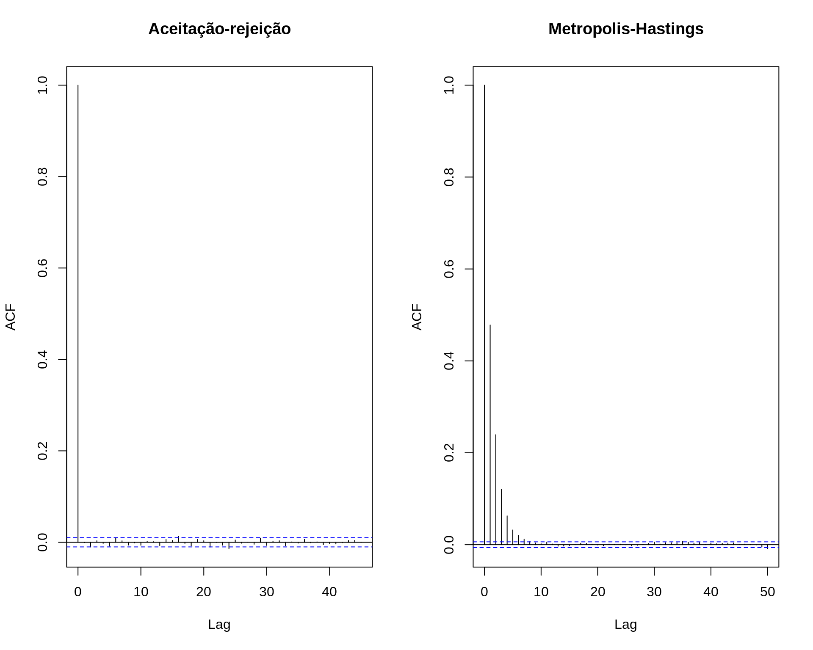
## Compara as duas cadeias
par(mfrow = c(2, 1))
plot.ts(x.ar[5000:5200], main = "Aceitação-rejeição")
plot.ts(x[5000:5200], main = "Metropolis-Hastings")
par(mfrow = c(1, 1))Veja como fica uma animação com o método em funcionamento:
3.1.2 Exemplo (Rayleigh)
Usando o algoritmo de Metropolis-Hastings, gere uma amostra de uma distribuição \(\text{Rayleigh}(\sigma)\), que possui a densidade
\[ f(x) = \frac{x}{\sigma^2} e^{-x^2/2\sigma^2}, \quad x \geq 0, \sigma > 0 \]
A distribuição Rayleigh é utilizada para modelar tempo de vida sujeito à rápido decaimento. A moda da distribuição é em \(\sigma\) e \(\text{E}(X) = \sigma\sqrt{\pi/2}\), \(\text{Var}(X) = \sigma^2(4-\pi)/2\).
Como distribuição proposta, considere uma \(\chi^2\) com \(X_t\) graus de liberdade.
## Define funções
f <- function(x, sigma) {
(x / sigma^2) * exp(-x^2 / (2 * sigma^2)) * (x >= 0) * (sigma > 0)
}
g <- function(x, df) dchisq(x, df)
## Visualiza _algumas_ propostas (pois os graus de liberdade da
## qui-quadrado irá depender de cada valor sorteado em cada iteração).
## NOTE que os graus de liberdade da qui-quadrado não precisam ser
## inteiros
curve(f(x, 4), from = 0, to = 20, ylim = c(0, .3), lwd = 2)
curve(g(x, 1), from = 0, to = 20, add = TRUE, col = 2)
curve(g(x, 2.5), from = 0, to = 20, add = TRUE, col = 3)
curve(g(x, 3.2), from = 0, to = 20, add = TRUE, col = 4)
curve(g(x, 4), from = 0, to = 20, add = TRUE, col = 5)
legend("topright",
legend = c("Rayleigh(4)", expression(chi^2 ~ (1)),
expression(chi^2 ~ (2.5)), expression(chi^2 ~ (3.2)),
expression(chi^2 ~ (4))),
lty = 1, col = 1:5)O algoritmo de Metropolis-Hastings nesse caso ficaria assim:
- Defina \(g(\cdot|X)\) como uma densidade de \(\chi^2(X)\)
- Gere \(X_0\) de \(\chi^2(1)\)
- Repita para \(i=2, \ldots, N\):
- Gere \(Y = X_{t+1}\) de \(\chi^2(X_t)\)
- Gere \(U\) de \(\text{U}(0,1)\)
- Calcule a taxa de aceitação \[ \alpha(X_t, Y) = \min \left( \frac{f(Y)g(X_t|Y)}{f(X_t)g(Y|X_t)}, 1 \right) \] onde \(f\) é a \(\text{Rayleigh}(\sigma)\), \(g(X_t|Y)\) é \(\chi^2(Y)\) avaliada no ponto \(X_t\), e \(g(Y|X_t)\) é a \(\chi^2(X_t)\) avaliada no ponto \(Y\).
- Se \[ U \leq \alpha(X_t, Y) \] aceite \(Y\) e faça \(X_{t+1}=Y\); caso contrário faça \(X_{t+1}=X_t\)
Portanto, para gerar valores de uma \(\text{Rayleigh}\) com \(\sigma=4\), uma implementação do algoritmo seria:
N <- 1e4
## Rayleigh(4)
sigma <- 4
x <- numeric(N)
x[1] <- rchisq(1, df = 1)
k <- 0 # para contar quantos foram aceitos
for (i in 2:N) {
y <- rchisq(1, df = x[i - 1])
num <- f(y, sigma) * g(x[i - 1], df = y)
den <- f(x[i - 1], sigma) * g(y, df = x[i - 1])
alpha <- num/den
u <- runif(1)
if (u <= alpha) {
x[i] <- y
k <- k + 1 # contagem dos aceitos
} else {
x[i] <- x[i - 1]
}
}## Taxa de aceitação
k/N# [1] 0.5913## Traço da cadeia
par(mfrow = c(2, 1))
plot.ts(x)
plot.ts(x[5000:5500])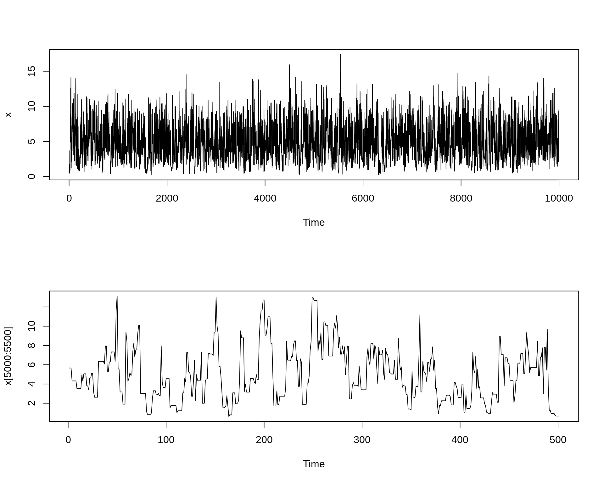
## Histograma da distribuição e correlação entre as observações
par(mfrow = c(1, 2))
hist(x, freq = FALSE)
ind <- seq(0, max(x), length.out = 100)
lines(ind, (f(ind, sigma)), col = 2)
acf(x)
par(mfrow = c(1, 1))
## Compara acumulada empírica com teórica
## Acumulada teórica da Rayleigh
Fx <- function(x, sigma) {
1 - exp(-x^2/(2 * sigma^2)) * (x >= 0) * (sigma > 0)
}
plot(ecdf(x))
curve(Fx(x, 4), add = TRUE, col = 2, from = 0)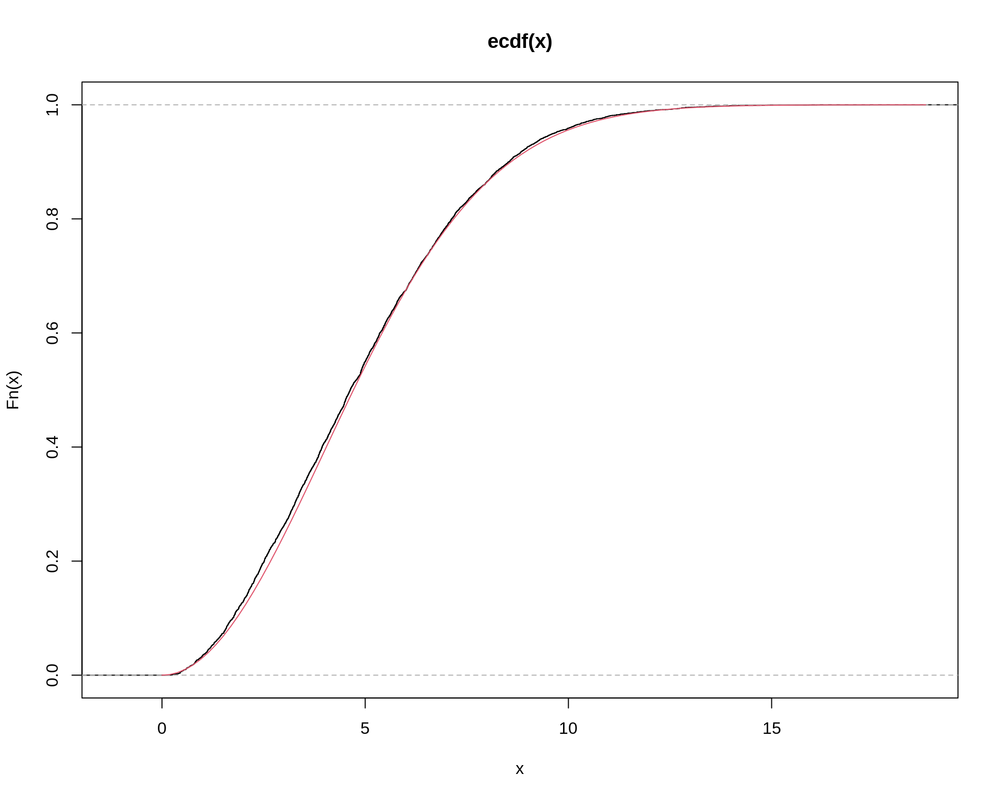
3.2 Metropolis Random Walk
O algoritmo de Metropolis-Hastings é uma generalização do algoritmo de Metropolis random walk. Nesse caso, a particularização é que no algoritmo de Metropolis, a distribuição proposta deve ser obrigatoriamente simétrica.
Um random walk ou “passeio aleatório” é uma equação recursiva, que basicamente diz que uma observação no tempo \(t+1\) depende da observação no temo \(t\) e de um ruído. Matematicamente: \[ x_{t+1} = x_t + \epsilon \] onde \(\epsilon \sim g\), e \(g\) é uma distribuição simétrica ao redor de zero.
## Simulação de um random walk
rw1 <- function(T, x1, seed) {
x <- numeric(T)
x[1] <- x1
set.seed(seed)
e <- rnorm(T)
for(t in 1:(T - 1)) {
x[t + 1] <- x[t] + e[t]
}
return(x)
}
par(mfrow = c(2, 1))
plot(rw1(T = 100, x1 = 10, seed = 1), type = "l",
xlab = "Tempo", ylab = "x")
plot(rw1(T = 1000, x1 = 10, seed = 1), type = "l",
xlab = "Tempo", ylab = "x")
par(mfrow = c(1, 1)) Podemos escrever essa equação como uma diferença sucessiva, \[
x_{t+1} - x_t = \epsilon
\] Ou seja, conhecendo \(x_t\), a distribuição de \(x_{t+1}\) será apenas uma função de \(\epsilon\), \[
g(x_{t+1}|x_t) = g(\epsilon)
\] Como \(g\) é simétrica, então \[
g(x_{t}|x_{t+1}) = g(-\epsilon) = g(\epsilon)
\]
Podemos escrever essa equação como uma diferença sucessiva, \[
x_{t+1} - x_t = \epsilon
\] Ou seja, conhecendo \(x_t\), a distribuição de \(x_{t+1}\) será apenas uma função de \(\epsilon\), \[
g(x_{t+1}|x_t) = g(\epsilon)
\] Como \(g\) é simétrica, então \[
g(x_{t}|x_{t+1}) = g(-\epsilon) = g(\epsilon)
\]
Sendo assim, se \(g(\cdot|X_t)\) é simétrica, podemos dizer que
\[ g(X_t|Y) = g(Y|X_t) \]
Portanto, a taxa de aceitação fica agora simplificada
\[ \begin{aligned} \alpha(X_t, Y) &= \min \left( \frac{f(Y)g(X_t|Y)}{f(X_t)g(Y|X_t)}, 1 \right) \\ &= \min \left( \frac{f(Y)}{f(X_t)}, 1 \right) \end{aligned} \]
Sendo assim, se um valor candidato \(Y = X_{t+1}\) é gerado a partir de uma distribuição proposta simétrica, então a probabilidade da cadeia se mover de \(X_t\) para \(X_{t+1}\) depende apenas da distância entre eles, i.e. \(g(X_{t+1}|X_t) = g(|X_{t+1} - X_t|)\). Então, a cada iteração, um increment \(Z\) é gerado a partir de \(g(\cdot)\), e \(Y\) é definido como \(Y = X_t + Z\) (veja que é a própria definição de random walk).
O incremento aleatório \(Z\) pode ser, por exemplo, normal com média zero, de forma que o valor candidadto é \(Y|X_t \sim \text{N}(X_t, \sigma^2)\), para algum \(\sigma^2 > 0\) constante. No enatnto, o incremento \(Z\) também pode ser proveniente de uma distribuição uniforme no intervalo \((-\delta, \delta)\), por exemplo.
Assim, o algoritmo de Metropolis random walk pode ser definido da seguinte forma:
- Defina uma distribuição proposta \(g\) simétrica
- Defina um valor inicial \(X_0\), dentro do domínio de \(f\)
- Repita os seguintes passos até convergir para uma distribuição estacionária:
- Gere um valor candidato \(Y \equiv X_{t+1} = X_t+Z\)
- Gere \(U\) de uma \(\text{U}(0,1)\)
- Calcule a taxa de aceitação \[ \alpha(X_t, Y) = \min \left( \frac{f(Y)}{f(X_t)}, 1 \right) \] Se \[ U \leq \alpha(X_t, Y) \] aceite \(Y\) e faça \(X_{t+1}=Y\); caso contrário faça \(X_{t+1}=X_t\)
3.2.1 Exemplo (uniforme)
Suponha que se deseja gerar valores de uma normal padrão, usando como distribuição proposta uma \(\text{U}(-\delta, \delta)\).
- Simule \(z \sim \text{U}(-\delta, \delta)\) e faça \(Y = X_t+Z\)
- Calcule a probabilidade de aceitação \(\alpha(X_t, Y) = \min \left( \frac{f(Y)}{f(X_t)}, 1 \right)\), onde \(f\) é a densidade da normal padrão
- Simule \(u \sim \text{U}(0,1)\). Se \(u \leq \alpha(X_t, Y)\), então \(X_{t+1}=Y\); caso contrário \(X_{t+1}=X_t\)
f <- function(x) dnorm(x, 0, 1)
delta <- 0.5
N <- 500
x <- numeric(N)
x[1] <- 0
set.seed(2019-10-11)
for(i in 2:N) {
z <- runif(1, -delta, delta)
y <- x[i - 1] + z
alpha <- min(f(y)/f(x[i - 1]), 1)
u <- runif(1)
if(u <= alpha) {
x[i] <- y
} else {
x[i] <- x[i - 1]
}
}
plot(x, type = "l")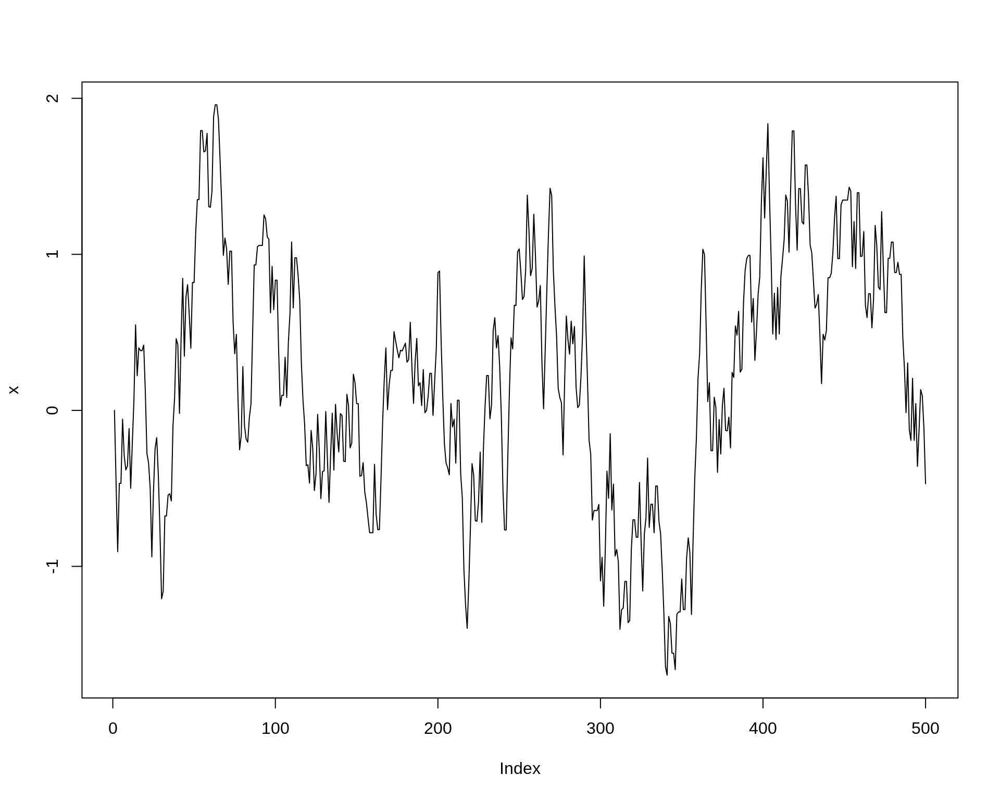
Veja o que acontece se aumentarmos o valor de \(\delta\)
f <- function(x) dnorm(x, 0, 1)
delta <- 2
N <- 500
x2 <- numeric(N)
x2[1] <- 0
set.seed(2019-10-11)
for(i in 2:N) {
z <- runif(1, -delta, delta)
y <- x2[i - 1] + z
alpha <- min(f(y)/f(x2[i - 1]), 1)
u <- runif(1)
if(u <= alpha) {
x2[i] <- y
} else {
x2[i] <- x2[i - 1]
}
}
plot(x2, type = "l")Compara a distribuição das amostras com a distribuição teórica
par(mfrow = c(1, 2))
plot(ecdf(x), main = expression(delta == 0.5))
curve(pnorm(x), add = TRUE, col = 2)
plot(ecdf(x2), main = expression(delta == 2))
curve(pnorm(x), add = TRUE, col = 2)Comparando as duas cadeias
par(mfrow = c(2, 1))
plot(x, type = "l", main = expression(delta == 0.5))
plot(x2, type = "l", main = expression(delta == 2))
par(mfrow = c(1, 1))No primeiro caso, os valores propostos ficam muito próximos do valor atual, e quase sempre serão aceitos. No entanto, levará muitas iterações até o algoritmo cobrir todo o espaço de \(X\).
No segundo caso, a taxa de rejeição é excessivamente alta e a cadeia se movimenta muito pouco, pois os valores propostos podem ficar muito longe do atual.
Nas duas situações o algoritmo pode ser ineficiente. Na prática temos que testar vários valores de \(\delta\) e monitorar a taxa de aceitação. A partir disso surge um importante conceito em amostradores MCMC: tuning, ou “refinamento”. Em teoria, não existe um valor ideal para \(\delta\), ambas as cadeias irão eventualmente convergir para a distribuição alvo (normal nesse caso). No entanto, a velocidade de convergência e a quantidade de espaço amostral explorado dependem de \(\delta\). Portanto, o amostrador pode ser refinado para melhorar sua eficiência.
Veja também que no primeiro caso, como os valores propostos são mais próximos do atual, eles também terão uma correlação maior.
par(mfrow = c(1, 2))
acf(x, lag.max = 50)
acf(x2, lag.max = 50)
par(mfrow = c(1, 1))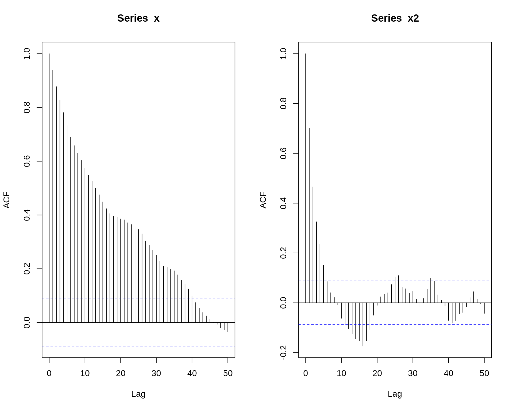
Veja como fica uma animação com o método em funcionamento com:
\(\delta = 0.5\)
\(\delta = 2\)
3.2.2 Exemplo (normal)
Considere gerar valores de uma distribuição \(t\) de Student com \(\nu\) graus de liberdade, usando como distribuição proposta uma \(\text{N}(X_t, \sigma)\).
rw.Metropolis <- function(nu, sigma, x0, N) {
f <- function(x, nu) dt(x, nu)
x <- numeric(N)
x[1] <- x0
u <- runif(N)
for(i in 2:N) {
z <- rnorm(1, mean = 0, sd = sigma)
y <- x[i - 1] + z
alpha <- min(f(y, nu)/f(x[i - 1], nu), 1)
u <- runif(1)
if(u <= alpha) {
x[i] <- y
} else {
x[i] <- x[i - 1]
}
}
return(x)
}Supondo que queremos gerar uma distribuição \(t(\nu = 4)\). Vamos fazer isso com valores diferentes de \(\sigma\) da distribuição normal proposta.
nu <- 4
N <- 2000
sigma <- c(.05, .5, 2, 16)
x0 <- 25
rw1 <- rw.Metropolis(nu, sigma[1], x0, N)
rw2 <- rw.Metropolis(nu, sigma[2], x0, N)
rw3 <- rw.Metropolis(nu, sigma[3], x0, N)
rw4 <- rw.Metropolis(nu, sigma[4], x0, N)
## Resultado das cadeias
par(mfrow = c(2, 2))
refline <- qt(c(.025, .975), df = nu)
rw <- cbind(rw1, rw2, rw3, rw4)
for (j in 1:4) {
plot(rw[, j], type = "l",
main = bquote(sigma == .(round(sigma[j], 3))),
ylab = "X", ylim = range(rw[, j]))
abline(h = refline)
}
par(mfrow = c(1, 1))- Com \(\sigma = 0.05\) a probabilidade de aceitação \(\alpha\) tende a ser grande, portanto quase todos os valores candidatos são aceitos. Os incrementos são pequenos e a cadeia não converge para a distribuição estacionária.
- Com \(\sigma = 0.5\), converge lentamente para a distribuição estacionária. Isso mostra que é importante definir um período de burn-in ou aquecimento da cadeia, descartando os primeiros valores gerados.
- Com \(\sigma = 2\), a cadeia possui uma boa mistura e converge rapidamente para a distribuição estacionária.
- Com \(\sigma = 16\), a probabilidade de aceitação \(\alpha\) é pequena, e a maioria dos valores candidatos são rejeitados. A cadeia converge, mas é ineficiente.
3.3 Amostrador independente
Outro caso particular do método geral de Metropolis-Hastings é o chamado amostrador independente. Nesse caso, a particularidade é que a distribuição proposta não depende mais de valores anteriores da cadeia, ou seja,
\[ g(Y|X_t) = g(Y) \]
Dessa forma, a probabilidade de aceitação simplifica para
\[ \begin{aligned} \alpha(X_t, Y) &= \min \left( \frac{f(Y)g(X_t|Y)}{f(X_t)g(Y|X_t)}, 1 \right) \\ &= \min \left( \frac{f(Y)g(X_t)}{f(X_t)g(Y)}, 1 \right) \\ &= \min \left( \frac{f(Y)}{f(X_t)} \bigg/ \frac{g(Y)}{g(X_t)}, 1 \right) \end{aligned} \]
Note que, embora os valores de \(Y=X_{t+1}\) sejam gerados de forma independente, a cadeia resultante não será iid, já que a probabilidade de aceitação ainda depende de \(X_t\).
O amostrador independente é de fácil implementação, mas tende a funcionar bem apenas quando a distribuição proposta é parecida (em forma) com a distribuição alvo.
Assim, o método do amostrador independente pode ser definido da seguinte forma:
- Defina uma distribuição proposta \(g\) similar à distribuição alvo
- Defina um valor inicial \(X_0\), dentro do domínio de \(g\)
- Repita os seguintes passos até convergir para uma distribuição estacionária:
- Gere um valor candidato \(Y\) a partir de \(g\)
- Gere \(U\) de uma \(\text{U}(0,1)\)
- Calcule a taxa de aceitação \[ \alpha(X_t, Y) = \min \left( \frac{f(Y)g(X_t)}{f(X_t)g(Y)}, 1 \right) \] Se \[ U \leq \alpha(X_t, Y) \] aceite \(Y\) e faça \(X_{t+1}=Y\); caso contrário faça \(X_{t+1}=X_t\)
3.3.1 Exemplo (beta)
## Gerar números de uma distribuição Beta usando a distribuição Uniforme
## e/ou normal.
## Distribuição alvo: X ~ Beta(2, 3)
f <- function(x) dbeta(x, shape1 = 2, shape2 = 3)
curve(f, 0, 1)
## Distribuição candidata (proposal): X ~ Uniforme(0,1)
g <- function(x) dunif(x, 0, 1)
## Gráfico das densidados sobrepostas.
curve(f, 0, 1)
curve(g, add=TRUE, col=2)
legend("topright", legend=c("Alvo", "Candidata"), lty=1, col=1:2,
bty="n")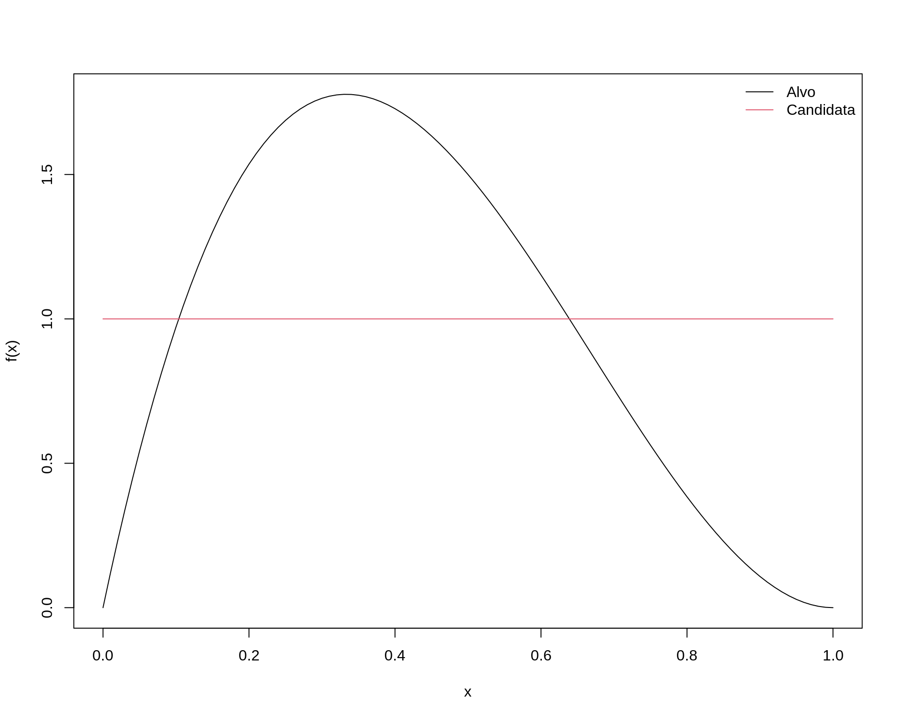
N <- 500
x <- numeric(N)
x[1] <- 0.5
set.seed(2019-10-11)
for(i in 2:N) {
y <- runif(1) # Distribuição proposta
alpha <- min((f(y) * g(x[i - 1])) / (f(x[i - 1]) * g(y)), 1)
u <- runif(1)
if(u <= alpha) {
x[i] <- y
} else {
x[i] <- x[i - 1]
}
}
## Cadeia
plot(x, type = "l")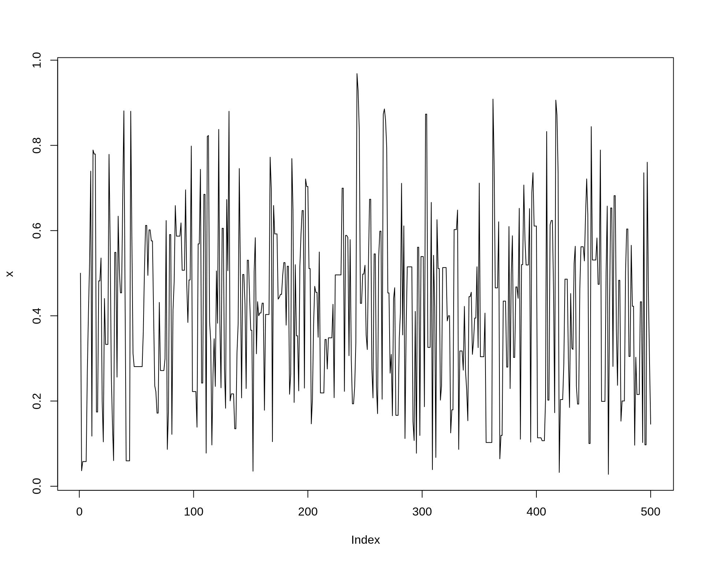
## Compara com teorica
plot(ecdf(x))
curve(pbeta(x, 2, 3), add = TRUE, col = 2)Veja como fica uma animação com o método em funcionamento:
Outro exemplo:
## Distribuição alvo: X ~ Beta(2, 3)
f <- function(x) dbeta(x, shape1 = 2, shape2 = 3)
curve(f, 0, 1)
## Distribuição candidata (proposal): X ~ Normal(0.5, 0.25)
g <- function(x) dnorm(x, 0.5, 0.25)
## Gráfico das densidados sobrepostas.
curve(f, 0, 1)
curve(g, add=TRUE, col=2)
legend("topright", legend=c("Alvo", "Candidata"), lty=1, col=1:2,
bty="n")N <- 500
x2 <- numeric(N)
x2[1] <- 0.5
set.seed(2019-10-11)
for(i in 2:N) {
y <- rnorm(1, 0.5, 0.25) # Distribuição proposta
alpha <- min((f(y) * g(x2[i - 1])) / (f(x2[i - 1]) * g(y)), 1)
u <- runif(1)
if(u <= alpha) {
x2[i] <- y
} else {
x2[i] <- x2[i - 1]
}
}
## Cadeia
plot(x2, type = "l")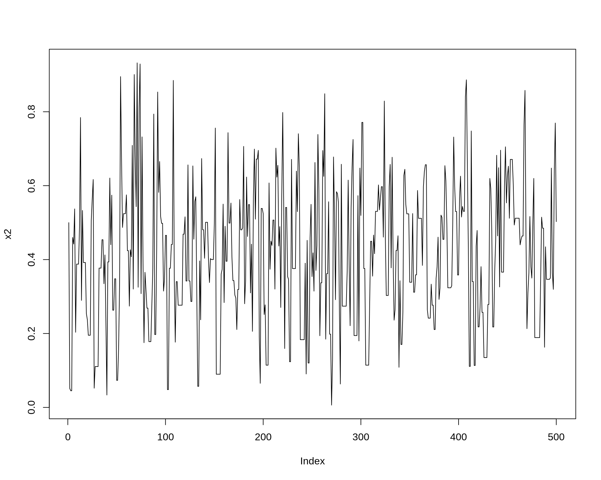
## Compara com teorica
plot(ecdf(x2))
curve(pbeta(x, 2, 3), add = TRUE, col = 2)Veja como fica uma animação com o método em funcionamento:
Comparando as cadeias geradas com as duas diferentes propostas:
par(mfrow = c(2, 2))
plot(x, type = "l")
plot(x2, type = "l")
acf(x)
acf(x2)
par(mfrow = c(1, 1))
4 Amostrador de Gibbs
O amostrador de Gibbs é mais um caso especial do amostrador de Metropolis-Hastings, e pode ser aplicado a uma grande variedade de distribuições.
O amostrador de Gibbs é utilizado principalmente quando a distribuição alvo é multivariada. Suponha que todas as densidades univariadas condicionais possam ser determinadas, e que seja possível amostrar de cada uma destas distribuições. A cadeia é gerada a partir de amostras da distribuição marginal da distribuição alvo, e, portanto, todos os valores candidatos são aceitos (i.e. a taxa de aceitação é de 100%).
Inicialmente veremos o amostrador de Gibbs no seu caso mais geral, o de multiestágios. No entanto, daremos mais ênfase ao seu caso particular de dois estágios, uma vez que ele possui propriedades de convergência superior e se aplica naturalmente a uma grande variedade de modelos estatísticos.
O amostrador de Gibbs possui muitas propriedades interessantes que o fazem ser o método “padrão” dos algoritmos de MCMC atualmente. Algumas dessas propriedades incluem:
- A “calibração” do algoritmo é feita diretamente a partir da distribuição alvo.
- Todos os valores candidatos são aceitos, portanto não há “desperdício” de tempo computacional amostrando valores que não farão parte da amostra.
- Problemas complexos envolvendo distribuições multivariadas são “decompostos” em problemas menores, usando distribuições univariadas.
4.1 Amostrador de Gibbs multiestágios
Seja \(X = (X_1, X_2, \ldots, X_d)\) um vetor \(d\)-dimensional de variáveis aleatórias. Podemos denotar o vetor aleatório \((d-1)\)-dimensional como
\[ X_{(-j)} = (X_1, \ldots, X_{j-1}, X_{j+1}, \ldots, X_d) \]
ou seja, o vetor \(X\) excluindo o elemento na posição \(j\). Além disso, suponha que podemos simular das correspondentes densidades condicionais univariadas, \(f_1, f_2, \ldots, f_d\), ou seja, podemos amostrar de
\[ \begin{aligned} X_j|X_{(-j)} \, &\sim \, f_j(X_j|X_{(-j)}) \\ X_j|x_1, \ldots, x_{j-1}, x_{j+1}, \ldots, x_d \, &\sim \, f_j(X_j|x_1, \ldots, x_{j-1}, x_{j+1}, \ldots, x_d) \end{aligned} \]
para \(j = 1, 2, \ldots, d\). Dessa forma, o algoritmo amostrador de Gibbs é dado pela seguinte transição de \(X^{(t)}\) para \(X^{(t+1)}\)
- Defina valores iniciais \(\mathbf{x}^{(0)} = (x_1^{(0)}, x_2^{(0)}, \ldots, x_d^{(0)})\) para \(t=0\)
- Faça \(\mathbf{x}^{(1)} = \mathbf{x}^{(0)}\)
- Para cada iteração, indexadas por \(t=1, 2, \ldots\), dado \(\mathbf{x}^{(t)} = (x_1^{(t)}, x_2^{(t)}, \ldots, x_d^{(t)})\), gere
- \(X_1^{(t+1)} \sim f_1(x_1|x_2^{(t)}, \ldots, x_d^{(t)})\)
- \(X_2^{(t+1)} \sim f_2(x_2|x_1^{(t+1)}, x_3^{(t)}, \ldots, x_d^{(t)})\)
- \(\ldots\)
- \(X_d^{(t+1)} \sim f_d(x_d|x_1^{(t+1)}, \ldots, x_{d-1}^{(t+1)})\)
As densidades \(f_1, f_2, \ldots, f_d\) são chamadas de condicionais completas (full conditionals), e um fato particular do amostrador de Gibbs é que estas são as únicas densidades usadas para a simulação. Portanto, mesmo em um problema de alta dimensão, todas as simulações são univariadas, o que traz uma grande vantagem teórica e computacional.
4.2 Amostrador de Gibbs em dois estágios
O amostrador de Gibbs em dois estágios gera uma cadeia de Markov a partir de uma distribuição conjunta da seguinte maneira. Se duas variáveis aleatórioas \(X\) e \(Y\) possuem uma distribuição conjunta \(f(x, y)\), com as correspondentes densidades condicionais \(f_{Y|X}\) e \(f_{X|Y}\), o amostrador de Gibbs em dois estágios gera uma cadeia de Markov (\(X_t\), \(Y_t\)) de acordo com os seguintes passos:
- Defina \(X^{(0)} = x^{(0)}\)
- Para cada iteração, indexadas por \(t=1, 2, \ldots\), gere
- \(Y^{(t)} \sim f_{Y|X}(\cdot|x^{(t-1)})\)
- \(X^{(t)} \sim f_{X|Y}(\cdot|y^{(t)})\)
Este algoritmo é facilmente implementado desde que a simulação de ambas as condicionais seja viável. Quando \(f(x,y)\) está disponível, até a constante de normalização, \(f_{Y|X}\) e \(f_{X|Y}\) também estarão (poderão ser conhecidas ou determinadas). Portanto, se a simulação direta destas condicionais não for possível, podemos usar novamente um algoritmo de MCMC para simular destas condicionais. Este método é chamado de Metropolis dentro do Gibbs (Metropolis whitin Gibbs).
Outro fato importante é que, se (\(X_t\), \(Y_t\)) são provenientes da diistribuição \(f\), então (\(X_{t+1}\), \(Y_{t+1}\)) também será, porque ambos os passos da iteração \(t\) são simulados das verdadeiras condicionais. A convergência da cadeia de Markov (e do algoritmo) é então assegurada, ao menos que o suporte das condicionais não sejam conectadas.
4.2.1 Exemplo (normal bivariada)
Considere gerar valores da distribuição Normal bivariada
\[ (X_1, X_2) \sim \mathcal{N}_2 \left( \begin{bmatrix} \mu_1\\ \mu_2 \end{bmatrix}, \begin{bmatrix} \sigma_1^2 & \rho \\ \rho & \sigma_2^2 \end{bmatrix} \right) \]
Nesse caso, \(X = (X_1, X_2)\), \(X_{(-1)} = X_2\), \(X_{(-2)} = X_1\). As densidades condicionais de uma normal biivariada são normais univariadas com parâmetros
\[ \begin{aligned} \text{E}[X_2|x_1] &= \mu_2 + \rho \frac{\sigma_2}{\sigma_1} (x_1 - \mu_1) \\ \text{V}[X_2|x_1] &= (1 - \rho^2) \sigma_2^2 \end{aligned} \]
e as cadeias são então geradas amostrando de
\[ \begin{aligned} f(x_1|x_2) &\sim \text{N}(\mu_1 + \rho \frac{\sigma_1}{\sigma_2} (x_2 - \mu_2), (1 - \rho^2) \sigma_1^2) \\ f(x_2|x_1) &\sim \text{N}(\mu_2 + \rho \frac{\sigma_2}{\sigma_1} (x_1 - \mu_1), (1 - \rho^2) \sigma_2^2) \\ \end{aligned} \]
Portanto, para uma Normal bivariada (\(X_1\), \(X_2\)), em cada iteração:
- Faça \((x_1, x_2) = X^{(t-1)}\)
- Gere \(X_1^{(t)}\) a partir de \(f(X_1|x_2)\)
- Atualize \(x_1 = X_1^{(t)}\)
- Gere \(X_2^{(t)}\) a partir de \(f(X_2|x_1)\)
- Faça \(X^{(t)} = (X_1^{(t)}, X_2^{(t)})\)
## Define constantes
N <- 1e4
## Burnin
burn <- 1000
## Matriz para armazenar as amostras
X <- matrix(0, N, 2)
## Define parametros da Normal bivariada
rho <- -.75
mu1 <- 0
mu2 <- 2
sigma1 <- 1
sigma2 <- .5
s1 <- sqrt(1 - rho^2) * sigma1
s2 <- sqrt(1-rho^2) * sigma2
## Valores iniciais: propositalmente valores discrepantes
X[1, ] <- c(10, 15)
## Gera a cadeia
for (i in 2:N) {
x2 <- X[i-1, 2]
m1 <- mu1 + rho * (x2 - mu2) * sigma1/sigma2
X[i, 1] <- rnorm(1, m1, s1)
x1 <- X[i, 1]
m2 <- mu2 + rho * (x1 - mu1) * sigma2/sigma1
X[i, 2] <- rnorm(1, m2, s2)
}
## Cadeias (mude os valores iniciais para ver convergencia)
matplot(X, type = "l")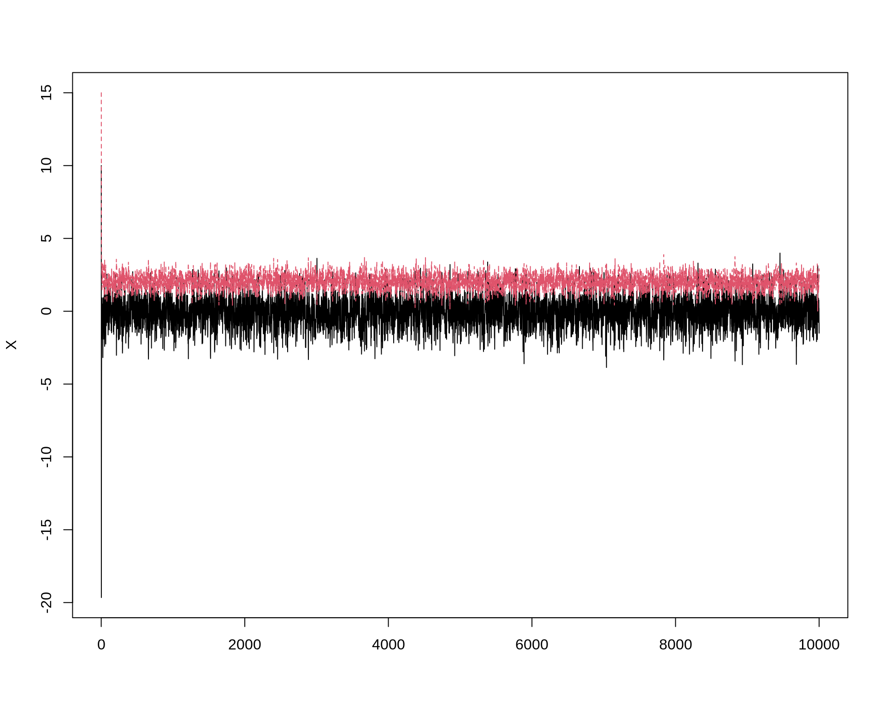
## Correlacao entre os valores
par(mfrow = c(1, 2))
acf(X[,1])
acf(X[,2])par(mfrow = c(1, 1))
## Conjunta
plot(X, main = "", xlab = bquote(X[1]),
ylab = bquote(X[2]), ylim = range(X[, 2]))
## Descarta os primeiros 1000 valores
b <- burn + 1
x <- X[b:N, ]
matplot(x, type = "l")## Nao elimina o problema de autocorrelacao...
par(mfrow = c(1, 2))
acf(x[,1])
acf(x[,2])par(mfrow = c(1, 1))
## ... mas elimina o problema dos valores iniciais discrepantes
plot(x, main = "", xlab = bquote(X[1]),
ylab = bquote(X[2]), ylim = range(x[, 2]))## Tamanho da amostra após o burnin
dim(x)# [1] 9000 2## Faz o thinning
x <- x[seq(1, nrow(x), 5), ]
dim(x)# [1] 1800 2## Confere novamente
matplot(x, type = "l")## Agora elimina o problema de autocorrelacao
par(mfrow = c(1, 2))
acf(x[,1])
acf(x[,2])
par(mfrow = c(1, 1))
## Conjunta
plot(x, main = "", xlab = bquote(X[1]),
ylab = bquote(X[2]), ylim = range(x[, 2]))## Compara com as marginais
## NOTE que no caso da normal bivariada, as marginais são normais com os
## respectivos parâmetros mu e sigma
par(mfrow = c(1, 2))
hist(x[, 1], freq = FALSE)
curve(dnorm(x, mu1, sigma1), col = 2, add = TRUE)
hist(x[, 2], freq = FALSE)
curve(dnorm(x, mu2, sigma2), col = 2, add = TRUE)par(mfrow = c(1, 1))
## Compara estatisticas
colMeans(x)# [1] -0.02109675 2.02465073cov(x)# [,1] [,2]
# [1,] 0.9693544 -0.3615163
# [2,] -0.3615163 0.2375652cor(x)# [,1] [,2]
# [1,] 1.0000000 -0.7533472
# [2,] -0.7533472 1.00000004.3 Exemplo (beta-binomial)
Considerando as seguintes distribuições
\[ \begin{aligned} X|\theta &\sim \text{Bin}(n, \theta) \\ \theta &\sim \text{Beta}(\alpha, \beta) \end{aligned} \]
A distribuição conjunta de \(X\) e \(\theta\) é (note que, por definição, as distribuições de \(X\) e \(\theta\) não são independentes)
\[ \begin{aligned} f(x, \theta) &= f(X|\theta) \cdot f(\theta) & \textsf{definição de conjunta} \\ &= \binom{n}{x} \theta^x (1-\theta)^{n-x} \cdot \frac{\Gamma{(\alpha+\beta)}}{\Gamma{(\alpha)}\Gamma{(\beta)}} \theta^{\alpha-1} (1-\theta)^{\beta-1} & \textsf{binomial}\cdot\textsf{beta} \\ &= \binom{n}{x} \frac{\Gamma{(\alpha+\beta)}}{\Gamma{(\alpha)}\Gamma{(\beta)}} \theta^x (1-\theta)^{n-x} \cdot \theta^{\alpha-1} (1-\theta)^{\beta-1} & \textsf{junta as constantes} \\ &= \binom{n}{x} \frac{\Gamma{(\alpha+\beta)}}{\Gamma{(\alpha)}\Gamma{(\beta)}} \theta^{x+\alpha-1} (1-\theta)^{n-x+\beta-1} & \textsf{soma os expoentes} \\ \end{aligned} \]
A correspondente distribuição condicional de \(X|\theta\) é \(\text{Bin}(n, \theta)\), cono foi definido acima, enquanto que a condicional \(\theta|x\) é
\[ \begin{aligned} f(\theta|x) &= \frac{f(X|\theta) \cdot f(\theta)}{f(x)} & \textsf{teorema de bayes} \\ &= \frac{f(X|\theta) \cdot f(\theta)}{\int f(x, \theta) \, \text{d}\theta} & \textsf{integra denominador} \\ &= \frac{f(X|\theta) \cdot f(\theta)} {\int f(X|\theta) \cdot f(\theta) \, \text{d}\theta} & \textsf{expande denominador} \\ &= c \cdot f(X|\theta) \cdot f(\theta) & \textsf{constante de integração = } c \\ &\propto f(X|\theta) \cdot f(\theta) & \textsf{proporcionalidade} \\ &\propto \theta^x (1-\theta)^{n-x} \cdot \theta^{\alpha-1} (1-\theta)^{\beta-1} & \textsf{binomial}\cdot\textsf{beta} \\ &\propto \theta^{x+\alpha-1} (1-\theta)^{\beta+n-x-1} & \textsf{soma os expoentes} \end{aligned} \]
Portanto, \(f(\theta|x) \sim Beta(\alpha^* = x+\alpha, \beta^* = \beta + n - x)\)
## X | theta ~ Bin(n, theta)
## theta ~ Beta(a, b)
## Condicionais são
## X | theta ~ Bin(n, theta)
## theta | X ~ Beta(x + a, n - x + b)
## Define constantes
N <- 1e4
## Vetores para armazenar as amostras
T <- numeric(N)
X <- numeric(N)
## Aqui da para testar varios valores para ver o impacto da priori
a <- 3
b <- 7
curve(dbeta(x, a, b), from = 0, to = 1)
## Define valores
n <- 15
## Valores iniciais: propositalmente discrepantes
T[1] <- 1
X[1] <- 50
## Amostrador de Gibbs
for (i in 2:N) {
X[i] <- rbinom(1, n, T[i - 1])
T[i] <- rbeta(1, X[i] + a, n - X[i] + b)
}
## Cadeias (mude os valores iniciais para ver convergencia)
par(mfrow = c(2, 1))
plot(X, type = "l")
plot(T, type = "l")par(mfrow = c(1, 2))
## Correlacao entre os valores
par(mfrow = c(1, 2))
acf(X)
acf(T)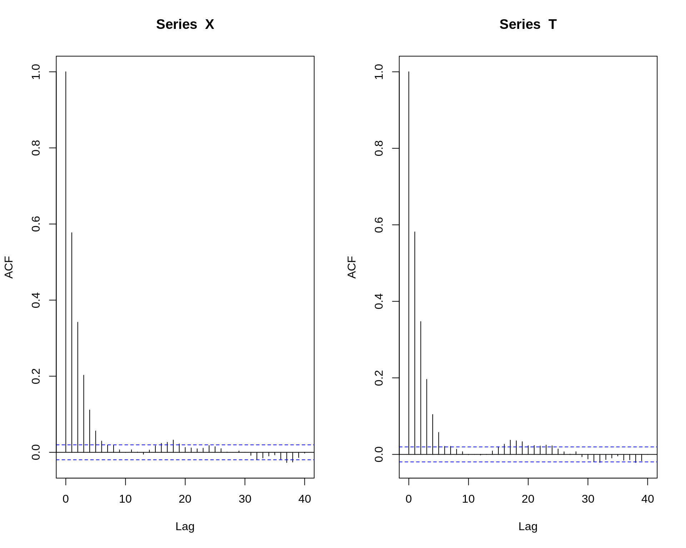
par(mfrow = c(1, 1))
## Conjunta
plot(T, X, xlab = bquote(theta), ylab = bquote(X * "|" * theta))## Tamnho da amostra
length(X)# [1] 10000## Faz o burnin
X <- X[-(1:1000)]
T <- T[-(1:1000)]
## Fazendo o thinning
x <- X[seq(1, length(X), 5)]
t <- T[seq(1, length(T), 5)]
## Correlacao entre os valores
par(mfrow = c(1, 2))
acf(x)
acf(t)par(mfrow = c(2, 1))
## Cadeias (mude os valores iniciais para ver convergencia)
par(mfrow = c(2, 1))
plot(x, type = "l")
plot(t, type = "l")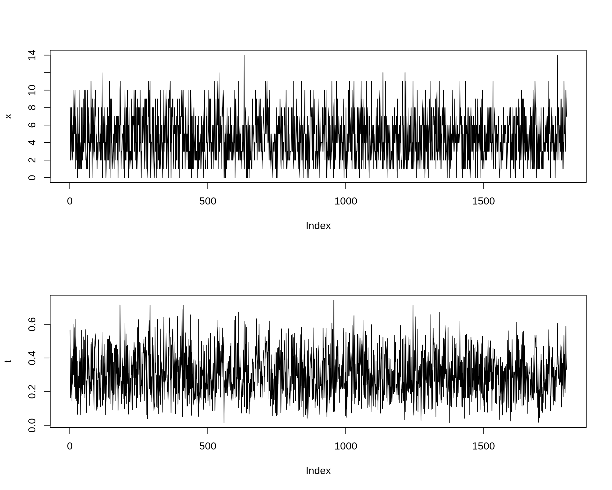
par(mfrow = c(1, 1))
## Conjunta
plot(t, x, xlab = bquote(theta), ylab = bquote(X * "|" * theta))
A distribuição marginal de \(\theta\) é \(\text{Beta}(\alpha, \beta)\), por definição. Já a distribuição marginal de \(X\) é menos comum, e é chamada de beta-binomial
\[ \begin{aligned} f(x) &= \int f(x, \theta) \, \text{d}\theta \\ &= \int f(X|\theta) \cdot f(\theta) \, \text{d}\theta \\ &= \int \binom{n}{x} \frac{\Gamma{(\alpha+\beta)}}{\Gamma{(\alpha)}\Gamma{(\beta)}} \theta^{x+\alpha-1} (1-\theta)^{n-x+\beta-1} \, \text{d}\theta \\ &= \binom{n}{x} \frac{\Gamma{(\alpha+\beta)}}{\Gamma{(\alpha)}\Gamma{(\beta)}} \frac{\Gamma{(x+\alpha)} \Gamma{(n-x+\beta)}}{\Gamma{(\alpha+\beta+n)}} \end{aligned} \]
## Integrando a conjunta em relação a theta, chega na marginal de X, que
## é uma Beta-Binomial
betabinom <- function(x, a, b, n) {
choose(n, x) * (gamma(a + b)/(gamma(a) * gamma(b))) *
((gamma(x + a) * gamma(n - x + b))/
gamma(a + b + n))
}
## Compara amostra com distribuicoes teoricas
par(mfrow = c(1, 2))
## A Beta-binomial é uma distribuição discreta
plot(prop.table(table(x)), type = "h")
points((0:14) + 0.2,
betabinom(x = 0:14, a = a, b = b, n = n), type = "h", col = 2)
hist(t, freq = FALSE, main = "", xlab = expression(theta))
curve(dbeta(x, a, b), add = TRUE, col = 2)par(mfrow = c(1, 1))Usando o JAGS
library(runjags)
##----------------------------------------------------------------------
## Com X como VA
## Dados
datalist <- dump.format(list(n = 15))
params <- c("x", "theta")
inicial <- dump.format(list(x = 1, theta = 0.5))
## Modelo
mod <- "model{
x ~ dbin(theta, n)
theta ~ dbeta(3, 7)
}"
## Ajuste
m.jags <- run.jags(
model = mod, monitor = params, data = datalist,
inits = c(inicial, inicial), n.chains = 2,
burnin = 5000, thin = 5, sample = 10000
)
## Resultados
m.jags
qbeta(c(0.025, 0.5, 0.975), a, b)
plot(m.jags)
str(m.jags$mcmc)
dim(m.jags$mcmc[[1]])
head(m.jags$mcmc[[1]])
##----------------------------------------------------------------------
## Com X observado
## Dados
datalist <- dump.format(list(x = 10, n = 15))
params <- c("theta")
inicial <- dump.format(list(theta = 0.5))
## Modelo
mod <- "model{
x ~ dbin(theta, n)
theta ~ dbeta(3, 7)
}"
## Ajuste
m.jags <- run.jags(
model = mod, monitor = params, data = datalist, inits = c(inicial, inicial),
n.chains = 2, burnin = 5000, thin = 5, sample = 10000
)
## Resultados
m.jags
qbeta(c(0.025, 0.5, 0.975), a + 10, b + 15 - 10)
plot(m.jags)Referências
Hastings, W. K. 1970. “Monte Carlo Sampling Methods Using Markov Chains and Their Applications.” Biometrika 57 (1): 97–109. https://academic.oup.com/biomet/article-abstract/57/1/97/284580.
Metropolis, Nicholas, Arianna W. Rosenbluth, Marshall N. Rosenbluth, Augusta H. Teller, and Edward Teller. 1953. “Equation of state calculations by fast computing machines.” The Journal of Chemical Physics 21 (6): 1087–92. https://doi.org/10.1063/1.1699114.

Este conteúdo está disponível por meio da Licença Creative Commons 4.0